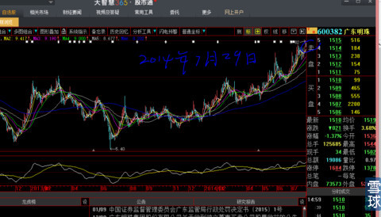
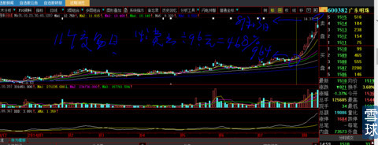
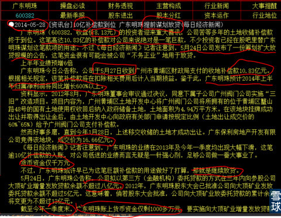
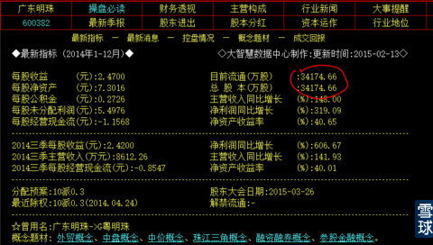
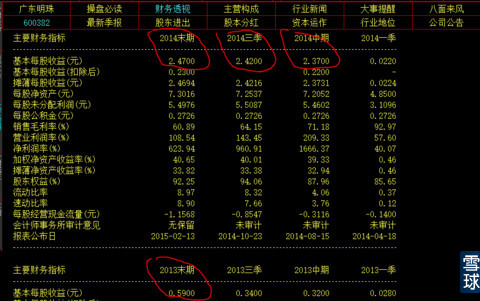
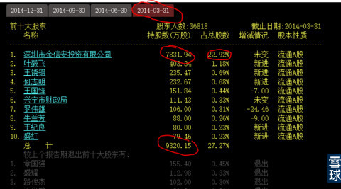

饭前刚好有20分钟，完成这个题目的承诺，想表达的意思就是不要读死书、看死数字，任何事情要多一个心眼。
这天我买入广东明珠（见下图），并且当天把买入单在东财《广东明珠》吧晒出来，呵呵，那是我第一次在公众场合发言，就像小孩淘气一样，没有特别的动因。今天特别说明是晒过单的，为了强调一下不是事后诸葛亮啦。也是因为这次发言，才被第一个粉丝邀请到“雪球”来，我还问人家“雪球”是什么冬运会项目？
今天把这个买入时刻图再次回顾，是想说明我技术核心思想的两点。
1、主升浪都是在相对高位展开的；
2、如何用心、用技术去把握临门一脚的那种微妙的感觉。
当然，我知道99%的人不可能在短时间体验到我要说的那种感觉。不要紧，毕竟会有一些老手在回顾复盘的时候找到那种感觉。第一、前期的长时间成交过程；第二，这最后两根K线组合以及量的稳定、筹码被锁定的微妙感；第三、就算你什么都感觉不到也不要紧，你看看我下面DMA设置后的“那种直白”，与均线相比，会过滤掉很多眼感的模糊，这个就是我想教给你们的一种本能（注意1、黄线的趋势已经感觉是由平向上的趋势苗头；2、白线上穿黄线的角度、回落的速度与时间数量都要有一些力度和角度；3、白线已经开始由回落向上回头的那么一刻，多么明显多么微妙啊。以上3条技术我已经讲过很多次了，反复呵斥粉丝不断的去复盘，恨不能硬塞进你的脑子里去。不信这个功夫有用？你们自己去复盘所有牛股就知道我在教你们什么，不过分的说，就是给你们送了一台小印钞机）。第四、这天之前的大型态是一个极其典型的大型圆弧底，稍微有一点图形技术的人都能看出来，正处于冲顶的快速拔高时刻，这种图形司空见惯，是所有做股票的人，必须牢记并融入血液的一种图形，否则你的投资技术就不及格。
这天，股价正处于冲击2012年5月股价最高位置（这个感觉复盘的时候一定要反复揣摩），一旦越过就会展开主升浪。
我认为，只要如上这样提示后，任何一个有正常理解力的人，都会在不断的复盘中，最终有“豁然开朗”的感觉。

11个交易日后，我在14元附近卖出，获利46.8%。获利多少不重要，也绝对没有技术显摆的意思，大家都知道，我已经很豪迈的说过：早就过了与人争长短阶段，自信到不屑于与任何高手论长短。当然对无论任何方面对我，哪怕稍有启发的能人我都会很学习并尊敬有加。

今天要讲的是我为什么要在14元这么低的绝对价位置卖出它？因为此价格与它半年报的每股收益2.37元极其不匹配，且这个业绩并不是提前不知道（当时半年报还没有出来），因为之前几个月上市公司都已经有预告，是广而告之、天下皆知的。
首先我们来看一个报道，见下图。这个是大智慧最低版本里都有的F10《八面来风》2014年5月28日的一篇报道，我们来整理分析一下就脉络特别清晰。

1、我买入时间是2014年7月28、29两天，这篇报道是5月28日，我是先随机翻盘看到图形吸引我，再晚上研究基本面。报道时间股价是8.13元，2个月后的股价是9.6元，没有大的涨幅；
2、公司5月27日收到土地补偿金，是收到而不是预期，所以是确定的；
3、5月27日收到钱，无论是按照“权责发生制”还是“收付实现制”会计准则，都会计入2014年的半年报中，没有了不确定性；
3、补偿款10.83亿元，税后净利润每股会高达2.3元，因为它的总股本是34175万股，可以计算的；见下图

4、我当时只能看到2014年3月的一季财报，见下图，2014年1季度每股收益0.022元，但是你注意，2013年它半年报收益0.32元（2013年上半年铁矿石价格下跌还不是太厉害，这点要注意，2013年1季报每股收益也是0.028元），那么最起码半年报主业不会亏损，假设主业利润是0，那么每股收益也会突破2元，全年就可以按照4元计算。是的，我知道全年不会再有这样的意外收益，每股收益也不会超过4元，但是你要想到这是市场，市场有灵活的一面也有呆板的一面，当半年报的时候，计算机算出来的市盈率就会很机械的按照半年折算成全年，给市场以“善意”的误导。

5、最重要的是，请注意：这才是最大的看点。2014年1季报每股净资产是4.85元，加上补偿款半年报就有可能每股净资产超过7元（事实是7.2元），大家知道“市净率”也是衡量股价很重要的一个因素，现价是9.6元，每股净资产是7元多，应该有一定的安全边际；基于以上的原因，我立刻判断股价有冲击15元的能力（我必须给自己更多的安全边际，不会参与假突破过程中的1.5元收益冒险）。
6、但是，为什么不能估值到更高呢？是基于以下特别明显的原因：
第一、土地补偿金是一次性收益，不具有可持续性。这一点傻子都看得出来，所以只能是重要的原因之一，但是，不是决定性原因；下面才是我本帖要说的重点。
第二、我们再来研究公告：
1、主业是铁矿石投资，2013年6月每股收益是0.32元，3季度是0.34元，证明2013年3季度的收益每股只有0.02元，与2014年1季度持平，主力不趁着半年报的辉煌利好出尽出逃，到2014年10月3季报的时候就会露馅；
2、铁矿石的价格还在继续下跌（观察大宗商品期货走势就知道了），主业有亏损的可能，一旦这样的黑天鹅出现，就会把自己置于危墙之下（君子不立危墙之下）。绝对股价在8元与在15元时刻遭遇财报黑天鹅境遇后，市场反应是不一样的（切记这一点）。所以我一直强调“股价的绝对价格”是一个必须在进入之前考虑的首要条件；
3、最最重要的是：土地补偿款是贷款给关联公司（见公告），是在填一个主业正在行业周期最黑暗时期的“黑洞”，把获得巨额资金所能发挥的最大想象想力—并购、重组、转型等等题材化为乌有。这个就是我今天要说出来的最核心的秘密。本来凭业绩+想象力+3.4亿股本，股价绝对会超过20元的潜力，但是，由于资金的用途明朗化把这些潜力全部葬送。
4、在看1季报，货币资金仅仅只有1千万元，之前就已经给关联公司填进去6亿资金，现在又要再填8亿有余。我们仔细再分析关联公司股东结构（并非上市公司100%控股），明显有利益输送之嫌，利率也并不优厚。更大的隐患是：未来有发生坏账的可能，因为关联公司一旦亏损，就会不能履约还款，会计处理上就会首先预提坏账准备。
5、我们再来看一看2014年3月末的前10 股东结构会发现，没有任何基金敢于进入，现在的行情，确定以及肯定是游资行为。一方面说明这股游资很聪明，充分利用时间段落。也有相当的实力，毕竟是3.4亿股总股本减去第一大股东7062万股后实际流通盘高达2.7亿股，接近33亿元流通市值，股价到15元时，流通市值会50亿元以上；另一方面也说明没有长线资金敢于进入，股价不具有连续、持久的攻击力。见下图。

从以上的分析，我们总结如下：
1、在绝对股价对应技术图形、技术指标、基本面全部都是确定性的情况下，要敢于操作，大胆操作，例如现在的......
2、对基本面情况的分析，不能拘泥于死数字。股市很多时候，市场的前景才是决定股价的辉煌未来而非过去沉淀的因素；
3、对于已知条件，既要用知识、也要用见识去分析、去评估。今天的案列是举例过去我们如何剔除沉淀因素降低预期。但是，我们现在正在操作的更多“标的”对象，恰好要反过来：不是强调沉淀因素，而是挖掘没有释放的因素，要大胆做多而不是谨慎有余，只有确定没有万一，也不要去想万一。
 |
我当初为什么会在14元卖出600382广东明珠。炒的是心 2015-02-24 11:44:30 |
Copyright © 1996-2014 SINA Corporation All Rights Reserved.